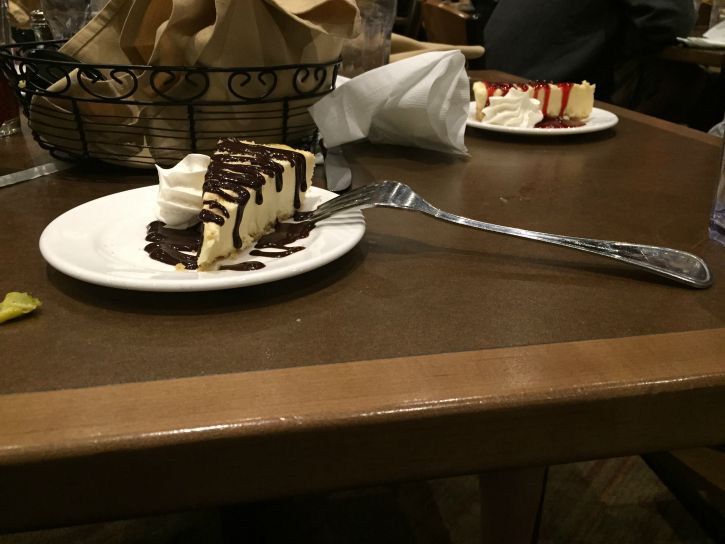
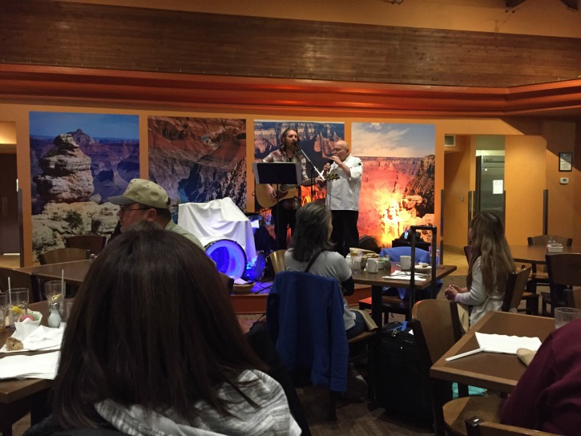
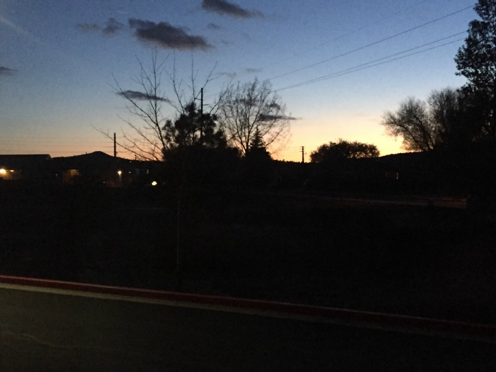

Grand Canyon Railway Hotel
Here's the hotel we stayed at (for the 1st and 3rd nights)
A look inside the Hotel
This was inside the lobby. Nice painting of the Grand Canyon
The first of many Trains
Just outside the hotel was this train. A model, not an actual working train.
Train Depot
This is where we got our shit-load of tickets. I didn't go inside this building though.
Singer
Having a buffet styled dinner with entertainment. I was more entertained by the little moving train.
Ring Ding Ding! It's my first meal!
On the menu: Mahi Mahi, Mac & Cheese, Broccoli & Cheese, Roasted Potatoes and Mini Corn Dogs, with an Olive Salad
Which way to go?
Cheesecake with Chocolate Drizzle. Yummy!
Inside the Grand Canyon Depot
We spent half of our meals here. It beats Hometown Buffet, yuck!
Horses & Carriage

Never got that horsey ride Jenn wanted me to have...
Sunset
Despite the chilly weather, the sunset was nice here.
Look who decided to join the fun?
One of the cooks I think, singing "Hallelujah"
Let's give it up for the 20s
And so ends my time as a 20 something year old know it all.
Williams, Arizona, an Introduction
Williams, Arizona, located in Coconino County, Arizona, is a small town with a population of about 3,000 people.
Its claim to fame is that it sits along the route of Historic Route 66, and serves as the southern terminus of the Grand Canyon Railway.
Williams is the last town to have Historic Route 66 bypassed, as lawsuits prevented the completion of its replacement: Interstate 40
Williams is named after a mountain man, William "Old Bill" Williams.
Route 66: The Icon
When people talk about famous roads in the United States, one of the first that gets mentioned is Route 66. It's not an official road any more; it was decommissioned in 1985 by the U.S. Highway System. But yet people love to talk about it. What's the galore? Let's explore the facts:
Route 66 was a popular highway in the old days that traveled from Chicago to Los Angeles, making its route through the Southwest.
It was so famous that it not only had a song named after it, but also a TV series from the 1960's named after it as well.
Route 66 was popular for those moving out West during the Dust Bowl in the 1930s.
Eventually, the Interstate Highway System was born, which led to the decline of Route 66. In 1985, Route 66 was officially decommissioned as a Highway
Despite this, parts of the Historic Route 66 are still around, as part of the National Scenic Byway system, known for their historic folklore.
Williams, Arizona: Bodie Style
So the Bodie's made it to Williams, Arizona. The ride was easy enough, 75 miles per hour speed limit, hardly anybody on the road. The weather was cold and they only had country music on the radio, but on the bright side, Jenn finally admitted Adam was going to turn 30, at 4:38PM on May 9th. The Grand Canyon Railway Hotel was nice, had the Arizona look and was easy to get to (except for the Construction outside). As Jenn put it, "It's brown like that state."
But with all the Trains, Planes and Automobiles we saw through the day, we thought there would be more taxis. But as Steve observed, "They don't have taxis, they have horse." Horses, the preferred transportation of the late 19th century before the car was invented. That's right, horses.
It's brown like the state
The first stop after checking into the hotel was Spenser's Bar for Happy Hour. A perfect place to end the Roaring 20s for Adam, with Martini in hand, it was just what the doctor ordered after traveling most of the day. And for those keeping score, a true Martini has Gin, not Vodka. Of course, Debbi and Steve briefly went missing, but Jenn kept them in line by sending a test text message. Debbi, surprised by this, told Jenn "You bammed me when I was peeing." All is restored, for the moment.

They don't have taxis (in Williams), they have horses
Afterwards, the Bodie's strolled to the Grand Depot Cafe with its buffet styled food. With all that food there, it's no wonder Debbi couldn't keep track of the Birthday Boy. "Where's Adam?" she asked. "I'm right here," Adam replied, standing immediately to her right as Debbi turned around and noticed Adam was so close to her. We arrived at the Grand Depot Cafe, using the first of many tickets in our possession.
You bammed me when I was peeing
And if that wasn't bad enough, the food was so mediocre that it led to looking for inspiration elsewhere. As Debbi asked the family "What are we gonna do now?" Jenn chimed in "Scratch our butts!" Steve, not wanting to scratch his butt, told Jenn "I'll let you go first." Later, Steve added "Let's go outside and fart!" That led Debbi to remark "Oopsie Poopsie!" causing complete laughter. Oopsie Poopsie, it seems, is a quote often said by Debbi's boyfriend, Earl. Twelve Year Old Boy Humor at its finest.
Bobbi, Sheri & Barry
The first day in Arizona was a raging success, despite the chilly cold weather. It was destined to get better. After all, it's Arizona. It don't stay cold for long. Adam's 30th birthday was almost there, with birthday cards from Bobbi, Sheri and Barry (the insurance guy) in hand, Adam was ready to celebrate his 30th Birthday in style.